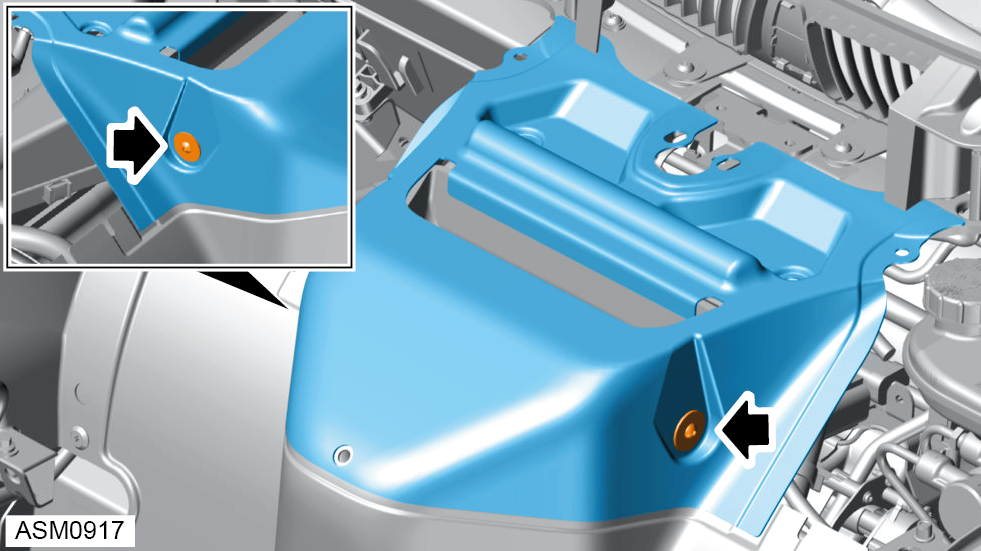

Hose Assembly - Reservoir To Pump - 4 Cylinder
Print
Operation Code: 32.03.10-02
Removal
- Remove front undertray. Refer to procedure.
- Release clamp securing reservoir/pump hose to pump.
- Disconnect reservoir/pump hose from pump.
 WARNING: Power steering fluid is a toxic substance and can be lethal if ingested.
WARNING: Power steering fluid is a toxic substance and can be lethal if ingested.
NOTE: Drain oil into a suitable container and dispose of appropriately.
- Remove radiator duct outlet left side. Refer to procedure.
- Remove radiator duct outlet right side.
NOTE: Procedure is the same as left side component.
- Remove scrivets (x3) securing HVAC air inlet to vehicle.

- Remove M5x12 screws and washers (x2) securing HVAC air inlet to filter lid.
- Remove HVAC air inlet.
- Remove scrivets (x6) securing centre radiator duct to front subframe.
- Remove centre radiator duct.
- Release clip securing reservoir/pump hose to return hose.
- Release clamp securing reservoir/pump hose to reservoir.
- Disconnect reservoir/pump hose from reservoir.
- Remove reservoir/pump hose.
Installation
- Installation is the reverse of removal procedure except for the following:
- Fill power steering system. Refer to technical data.
- Bleed power steering system. Refer to procedure.